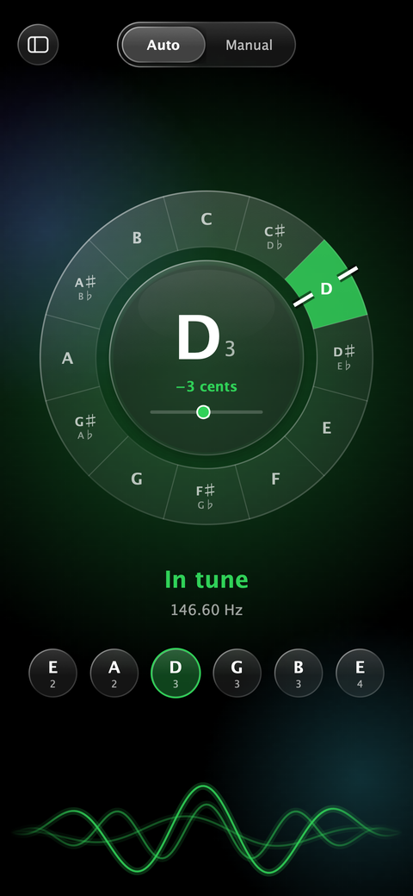
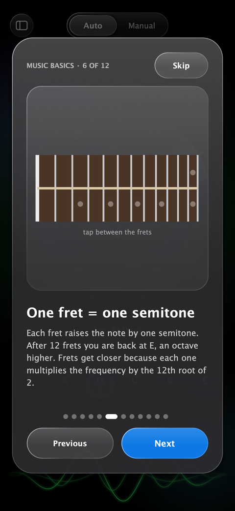
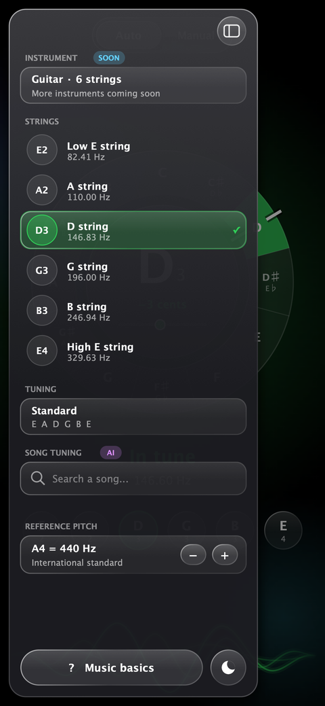

Tune-AL
Guitar tuner and music theory for beginners



How to tune
- Allow microphone access when asked.
- Play one string. The ring shows the note, and the bar shows how many cents sharp or flat it is.
- Turn the peg until the ring turns green (within 3 cents).
- Manual mode: tap a note on the ring to hear a reference tone.
- Tap ? for the short Music basics guide.
Troubleshooting
- Nothing happens when I play: check Settings → Privacy & Security → Microphone and make sure Tune-AL is on.
- The note jumps around: pluck one string at a time, close to the phone, in a quiet room.
- Everything is slightly off: check the reference pitch (A4) in the side menu. The standard is 440 Hz.
Contact
Found a bug or have an idea? Open an issue on GitHub.